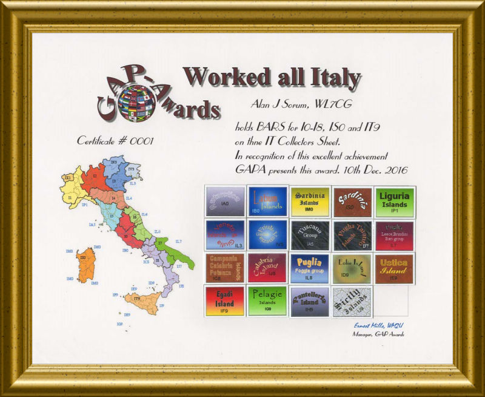

| GAP Awards Paper Certificates Family Tree |
| Index | Grid Index |
| The
Ultimate Italian Certificate, DIT (Digital Worked all Italy) You supply the frame! |
|  |
| GAPA-DIT (digital IT) award.
If you complete all Ix0 - Ix9 on your IT collectors sheet, you get to claim this DIT PINNACLE award on which there is space to collect the harder Italian Islands and stickers, IA0, 1BO, IM0 ...... IH9, IJ9 Inclusive... all 19 of them if you can! The PINNACLE awards are numbered. These awards are offered in different modes each being shown on the endorsement BAR or stamp. The achievement recognition will be posted in the relevant mode OLAR table. |